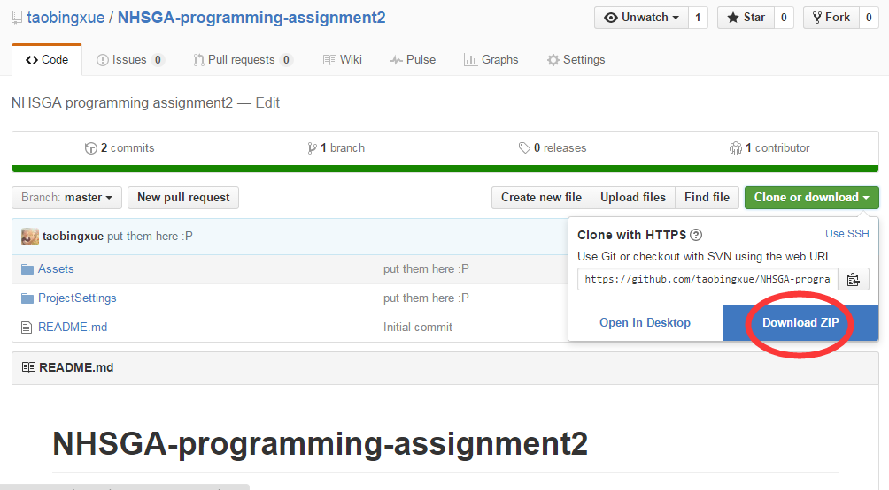

Assigned: 6.29 | Due: 6.27 11:59am
1. Overview
This assignment will help you better understand the framework of GameObject in Unity.Engine. For this assignment, you need to implement a simple mechanic by your own in C# for Unity.
2. Requirements
For this assignment, you need to make a simple game with Unity and fit the requirements below. If you are confident about yourself, you can implement your own idea, do whatever you want from scratch with Unity. If you are not sure, you can play with the handout project we provide. You can change anything there. We set numbers only for saving your time on balancing numbers. If you really not sure, you can just follow the note below and fill all TODOs inside the handout project.
Here are the requirements: 1. Use loop(for/while) and if in your code. 2. Use Instantiate and Destroy in your code. 3. Create a prefab in your project. 4. Use physic system in your project(detect collision, use rigidbody, or force/velocity/acceleration, etc.) 5. Make your game interactive.
Be Creative! Have Fun!
3. Handout
For those who are not so familiar with basic programming syntax or object-oriented programming or have already forgot what you have learned, we provide you a half-finished Unity project. You can finish a same breakout as we made in class by follow the note and fulfill the TODOs.
Download:
You can download from this link: https://github.com/taobingxue/NHSGA-programming-assignment2 by click the 'Clone or Download', and then click 'Download ZIP'.
Note:
What do you need to do with Unity: 1. Make a brick prefab. 2. Make a physic Material for the walls, platform, ball, and your brick prefab. 3. Add a rigidbody to the Ball. Adjust the parameters to what you need. 4. Set platform for Ball's public variable as you need it to put the Ball back when the player lose. 5. Set the brick prefab in brick generator.
TODOs: 1. First, you need a brick generating function in brick_generator.cs which is already attached on the GameObject brick_generator. 2. To handle the keyboard input and control the platform, you need to finish the update function in paltform_controler.cs which is already attached on the GameObject platform. 3. Then, you need to finish the update function in ball.cs so that you can start the game. 4. At last but not least, please finish the TODO in brick.cs then your bricks will be destroyed when they get hit.
Unity Official Documentation: https://docs.unity3d.com/ScriptReference/
4. Hand in
......